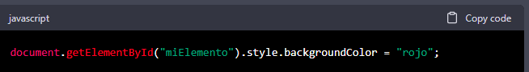
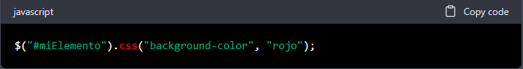
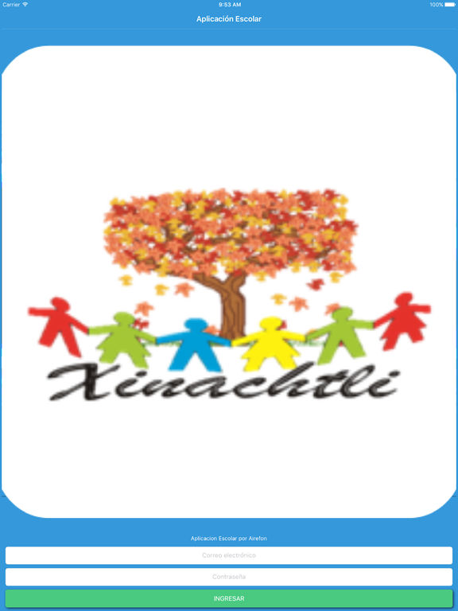

Lenguajes de programación
CSS
CSS: Historia, estructura, actualizaciones y su razón de ser CSS (Cascading Style Sheets) es un lenguaje de diseño utilizado para controlar la presentación visual de páginas web. Desde su creación en 1996, CSS ha sido una herramienta vital para los desarrolladores web, ya que les permite separar la presentación visual de una página de su contenido, lo que hace que el proceso de diseño y mantenimiento de sitios web sea mucho más fácil y eficiente.
Historia de CSS
Antes de la creación de CSS, los desarrolladores web tenían que incluir estilos de diseño directamente en las etiquetas HTML, lo que hacía que el código fuera confuso y difícil de mantener. En 1994, el navegador Mosaic introdujo la etiqueta , que permitía a los desarrolladores cambiar el tamaño y el tipo de letra en una página. Sin embargo, esta etiqueta fue muy limitada en cuanto a la personalización del diseño visual. En 1996, Håkon Wium Lie, un desarrollador web noruego, propuso la creación de un nuevo lenguaje de diseño que permitiría a los desarrolladores separar la presentación visual de una página de su contenido. Este nuevo lenguaje se llamó Cascading Style Sheets (CSS), y la primera versión fue lanzada en diciembre de 1996. Desde entonces, CSS ha evolucionado significativamente, con actualizaciones regulares que han mejorado su funcionalidad y lo han hecho más fácil de usar para los desarrolladores. Estructura de CSS La estructura básica de CSS es relativamente simple. Se compone de un selector, una propiedad y un valor. El selector se utiliza para indicar qué elemento HTML se debe aplicar el estilo, la propiedad se utiliza para definir el estilo que se va a aplicar y el valor se utiliza para especificar el valor de la propiedad. Por ejemplo, para cambiar el color del texto en un elemento, se utilizaría el selector "p", la propiedad "color" y el valor "red". El código se vería así: p { color: red; } Este código cambiaría el color del texto en todos los elementos
de la página a rojo. Actualizaciones de CSS Desde su creación, CSS ha pasado por varias actualizaciones importantes. Cada actualización ha agregado nuevas características y ha mejorado la funcionalidad del lenguaje.
| CSS1: | La primera versión de CSS, lanzada en 1996, incluía solo un conjunto básico de estilos y propiedades. |
| CSS2: | La segunda versión de CSS, lanzada en 1998, agregó muchas nuevas propiedades y estilos, incluyendo el posicionamiento, los efectos de transición y el soporte para hojas de estilo de múltiples medios. |
| CSS3: | La tercera versión de CSS, lanzada en 1999, fue una actualización importante que agregó muchas nuevas características, incluyendo la animación, las transformaciones 3D y los sombreados. CSS3 también se divide en varios módulos, lo que permite a los desarrolladores utilizar solo las partes que necesitan. |
| CSS4: | Actualmente, no existe una versión oficial de CSS4. En su lugar, CSS se actualiza constantemente con nuevas características y mejoras. |
JavaScript
Introducción JavaScript es uno de los lenguajes de programación más utilizados en el mundo. Fue creado en 1995 por Brendan Eich mientras trabajaba en Netscape Communications Corporation, una compañía de software que en ese momento estaba compitiendo contra Microsoft y su navegador web Internet Explorer. Desde su creación, JavaScript ha evolucionado significativamente y se ha convertido en un componente esencial de la web moderna. En este artículo, exploraremos la historia de JavaScript, su estructura, actualizaciones y por qué existe. Historia En 1995, Netscape estaba buscando una manera de agregar interactividad a sus páginas web, y Brendan Eich fue contratado para crear un lenguaje de scripting que pudiera ejecutarse en los navegadores web. El primer nombre propuesto para el lenguaje fue "Mocha", pero después se cambió a "LiveScript". Sin embargo, debido a la popularidad de Java en ese momento, Netscape cambió el nombre del lenguaje a "JavaScript" para aprovechar su popularidad. En 1996, Netscape presentó JavaScript a la Organización Internacional de Normalización (ISO) y a la Comisión Electrotécnica Internacional (IEC) para su estandarización. El comité de estandarización creó el estándar ECMAScript, que se ha actualizado varias veces a lo largo de los años para reflejar las mejoras y actualizaciones de JavaScript. En 1997, Microsoft incluyó su propia implementación de JavaScript en Internet Explorer 3.0, y desde entonces ha sido incluido en todos los principales navegadores web. Estructura JavaScript es un lenguaje de programación de scripting orientado a objetos que se utiliza para agregar interactividad a las páginas web. Es un lenguaje interpretado, lo que significa que no necesita ser compilado antes de ser ejecutado. Los programas de JavaScript se escriben en archivos de texto plano con extensión ".js". Los programas de JavaScript se ejecutan en el lado del cliente, lo que significa que se ejecutan en la computadora del usuario en lugar del servidor. Esto permite una mayor interactividad en las páginas web, ya que el código de JavaScript puede responder a la entrada del usuario en tiempo real. JavaScript se basa en la sintaxis de otros lenguajes de programación, como C, Java y Perl. Utiliza variables para almacenar datos y funciones para realizar acciones. También tiene tipos de datos como cadenas, números y booleanos, y utiliza operadores como +, -, * y / para realizar operaciones matemáticas. Actualizaciones Desde su creación en 1995, JavaScript ha sido actualizado y mejorado varias veces. Las actualizaciones se han centrado en mejorar la funcionalidad, la seguridad y la compatibilidad con otros lenguajes de programación. ECMAScript es el estándar que define las especificaciones de JavaScript, y se ha actualizado varias veces a lo largo de los años. Las actualizaciones más importantes incluyen: ECMAScript 2 (1998): agregó soporte para expresiones regulares, manejo de excepciones y mejoró el manejo de errores. ECMAScript 3 (1999): agregó soporte para JSON, mejoró la gestión de errores y agregó nuevas funciones de matriz. ECMAScript 4 (abandonado): se abandonó antes de su lanzamiento debido a desacuerdos en la comunidad de programación. JavaScript existe porque se necesitaba un lenguaje de programación para agregar interactividad a las páginas web. Antes de su creación, las páginas web eran estáticas y no permitían interacción con el usuario más allá de hacer clic en enlaces o botones. JavaScript fue diseñado para permitir que los desarrolladores web crearan páginas web más dinámicas y atractivas para el usuario. Con JavaScript, los desarrolladores web pueden agregar interactividad a las páginas web, como validar formularios, cambiar el contenido de una página sin tener que volver a cargarla, crear animaciones y efectos visuales, y mucho más. Esto ha llevado a una experiencia de usuario mucho más rica y satisfactoria en la web. Además, JavaScript también se ha utilizado fuera del contexto de la web para crear aplicaciones de escritorio, juegos, aplicaciones móviles y otros tipos de software. JavaScript se ha convertido en un lenguaje de programación muy popular debido a su flexibilidad y facilidad de aprendizaje en comparación con otros lenguajes de programación. En resumen, JavaScript existe porque se necesitaba un lenguaje de programación para agregar interactividad a las páginas web y ha evolucionado para ser utilizado en una amplia variedad de contextos de programación.
jQuery
jQuery es una biblioteca de JavaScript que se utiliza para simplificar la creación de interactividad en las páginas web. Fue creado por John Resig en 2006 y desde entonces ha sido ampliamente adoptado por los desarrolladores web de todo el mundo. En este artículo, exploraremos qué es jQuery, por qué existe y sus actualizaciones a lo largo del tiempo. ¿Qué es jQuery? jQuery es una biblioteca de JavaScript que se utiliza para simplificar la creación de interactividad en las páginas web. Permite a los desarrolladores web escribir código JavaScript más rápido y fácilmente, y también mejora la compatibilidad entre los diferentes navegadores web. jQuery se basa en la sintaxis de JavaScript y utiliza una serie de funciones predefinidas para realizar tareas comunes en las páginas web. Estas funciones se llaman "métodos" y se aplican a los elementos HTML de la página web para realizar acciones como cambiar el contenido de una página, animar elementos, validar formularios y mucho más. Por ejemplo, si un desarrollador quiere cambiar el color de fondo de un elemento en una página web utilizando JavaScript, tendría que escribir algo como esto:

Sin embargo, con jQuery, el mismo resultado se puede lograr con una sola línea de código:

Esta es solo una de las muchas formas en que jQuery puede simplificar la creación de interactividad en las páginas web. ¿Por qué existe jQuery? jQuery fue creado para abordar las limitaciones y desafíos que los desarrolladores web enfrentaban al crear interactividad en las páginas web. En particular, los desarrolladores enfrentaron problemas de compatibilidad entre los diferentes navegadores web, lo que significaba que tenían que escribir código JavaScript complejo y personalizado para cada navegador. Además, el código JavaScript personalizado para cada navegador web era difícil de mantener y actualizar, lo que llevaba a problemas de rendimiento y seguridad. John Resig creó jQuery para simplificar la creación de interactividad en las páginas web y mejorar la compatibilidad entre los diferentes navegadores web. Con jQuery, los desarrolladores web pueden escribir código JavaScript más rápido y fácilmente, y también tienen acceso a una gran cantidad de funciones predefinidas que les permiten realizar tareas comunes de manera más eficiente. Además, jQuery mejora la compatibilidad entre los diferentes navegadores web, lo que significa que los desarrolladores no tienen que escribir código personalizado para cada navegador. Actualizaciones de jQuery Desde su creación en 2006, jQuery ha sido actualizado varias veces para agregar nuevas funciones y mejorar la compatibilidad entre los diferentes navegadores web. Las actualizaciones más importantes incluyen: jQuery 1.x: La serie de jQuery 1.x fue lanzada en 2006 y se centró en mejorar la compatibilidad entre los diferentes navegadores web. Esta serie incluyó funciones como el método .ajax() para realizar solicitudes de Ajax y la función .animate() para crear animaciones en las páginas web. jQuery 2.x: La serie de jQuery 2.x fue lanzada en 2013 y se centró en mejorar el rendimiento y la compatibilidad con los navegadores web modernos. Esta serie eliminó el soporte para Internet Explorer 6, 7 y 8 para mejorar el rendimiento y simplificar el código.
Travesía Académica
|

Jardín de Niños Xinachtli
|
El jardín de niños lo estudié en Kínder "Xinachtli" durante 2 años, durante este tiempo desarrollé todas mis habilidades cognitivas y sociales. |
Escuela Primaria "Francisco Márquez"
|
Estudié durante 6 años en la escuela primaria Francisco Márquez, aquí obtuve la mayor parte de mi conocimiento y las bases para el desarrollo de mis aptitudes y especialidades. Gracias a muchas experiencias y al compromiso de los maestros con el aprendizaje del alumnado logré egresar con el promedio más alto de la generación. |
Escuela Secundaria DIURNA No 238 "Ramón Beteta"
|
Estudié la secundaria durante 3 años, pero desafortunadamente poco menos de la mitad fue en forma presencial debido a que se presentó la pandemia del COVID-19. Sin embargo esto no fue un impedimento para salir adelante con mis materias y conocimientos. |

Centro de Estudios Científicos y Tecnológicos N°9 "Juan de Dios Bátiz"
|
Estudié 3 años en el CECyT 9 en donde me escogí la carrera de Programación, aquí aprendí distintos lenguajes de programación como python, java, javaScript, c++, etc. Esta escuela es de alto nivel de exigencial por lo cual no fue fácil mantener el ritmo y no desertar, pero tuve la mala fortuna de ser acompañado sentimentalmente por alguien que me abandonó y jamás me apoyó en tantas ocasiones, siendo unos dias depues de mi cumpleaños me traiciono. ahora sé que mi verdadero motivo a salir adelante es mi ambición por el éxito. Saludos a todos <3 |